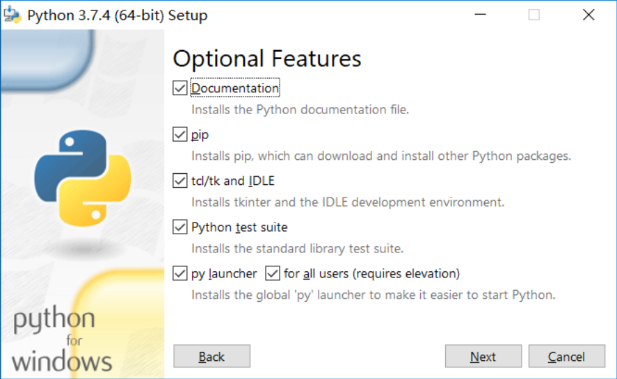

原文出处:本文由博客园博主bodh提供。
原文连接:https://www.cnblogs.com/bodh/p/11509940.html
原文连接:https://www.cnblogs.com/bodh/p/11509940.html
windows环境下的python安装
1.下载安装包
python的官方下载地址：https://www.python.org/downloads/windows/
2.安装过程
注意勾选添加环境变量，这样就不用手动添加了。

3.安装完成，测试是否安装成功。
在系统dos窗口输入python，会出现python的版本号等信息 就说明安装成功了。